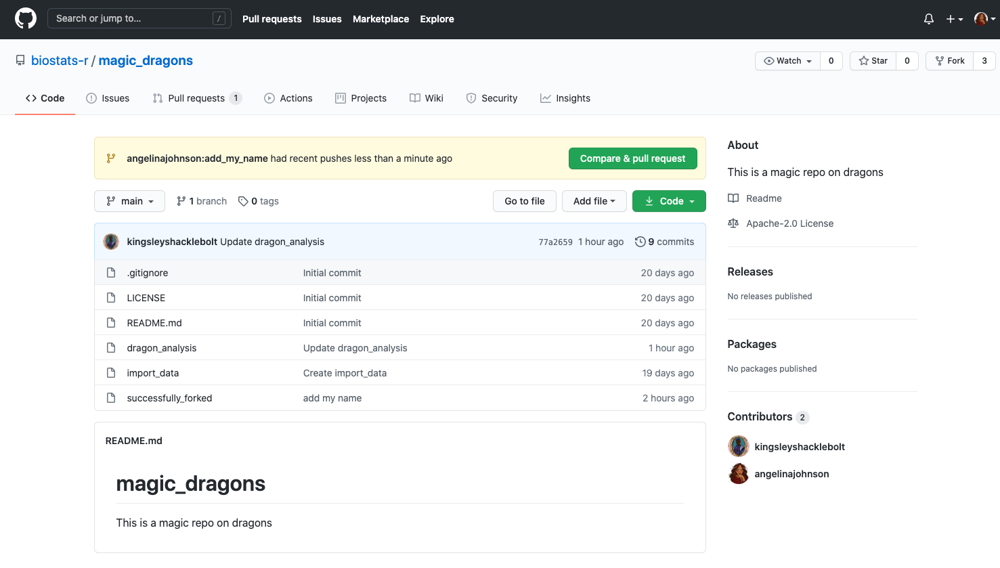
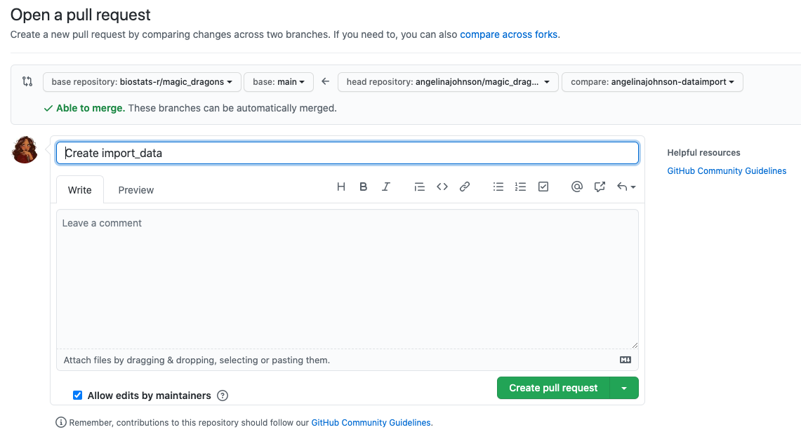
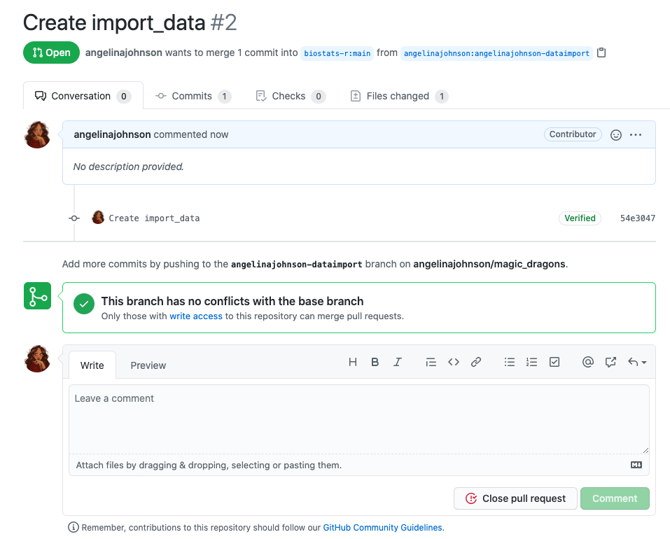
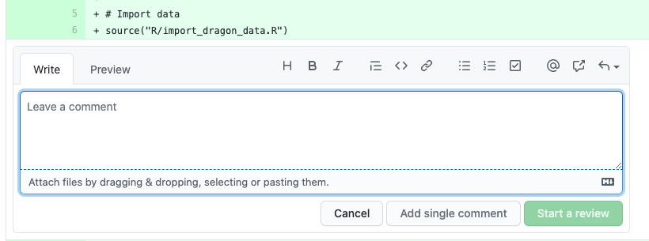
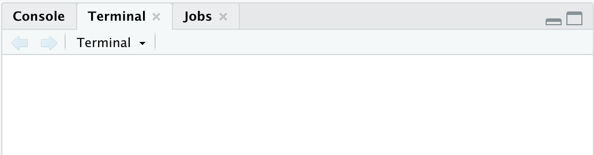
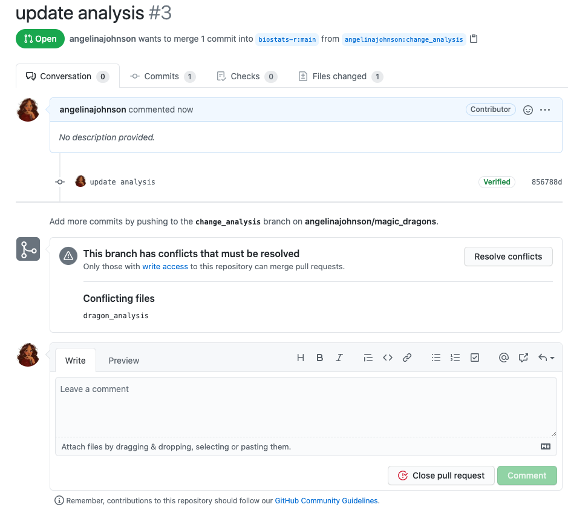

4 Collaborating with forks
4.1 What is a fork?
GitHub is useful for developing your own code, but at some point you might want to collaborate with other people on a project. Or you might come across a GitHub repository that you want to use as a starting point for your own work. In both cases forks are the way to go.
A fork is a copy of somebody’s GitHub repository. You can fork a repo and work independently of the original project. Or if you are collaborating with other people you can stay connected with the original repository via pull requests.
However, you cannot directly affect (or damage) the original project, which is somewhat less scary, right?
Definitions
- fork - a copy of a repo on GitHub that is connected to the original
- pull request - a system for suggesting edits and additions to the owner of the original repo from your fork
- origin - conventional name for the remote of your fork
- upstream - conventional name for the remote of the original repo
4.1.1 The workflow
To understand the workflow, let’s see how Angelina and Kingsley collaborate using GitHub (Figure 4.1).
Kingsley owns a GitHub repo. Angelina forks this repo (1) and then clones it to her computer (2). Angelina develops code using branches and makes commits (3). Then she pushes these changes to her remote repo on GitHub (4) and makes a pull request to the original repo, which Kingsley merges (5).
From now on Angelina will fetch (6) and merge (7) the newest changes from upstream into her local repo and continue the workflow (3-5).

4.2 Forking a repo
You can fork a repo from R with usethis, or directly on GitHub.
The easiest way to fork a repo on GitHub and clone it to your computer is with the usethis package. Find the user name and repo name of the repo you want to fork. To fork and clone the “kingsleyshacklebolt/dragon_study” repo, use
library(usethis)
create_from_github("kingsleyshacklebolt/dragon_study", fork = TRUE)This will
- fork the repo, creating a copy in your own GitHub account.
- clone your fork of the repo onto your computer. By default, the clone will be put on your desktop. You can move the entire folder to somewhere more convenient, or set the
destdirargument. - set up the connections between the clone, your fork and the original repo. You can see these connections in the terminal with the command
git remote -vSometimes if you only want to make a small change to a repo, it might be more convenient to make a fork on GitHub and make all the edits directly on GitHub.
To do this, go to GitHub, log into your account and go to the repository you want to fork.
Let us assume that Angelina wants to fork the magic_dragon repo from biostats. Click on the fork button on the top right of the webpage and wait until the repo is forked.

4.3 Working on a fork
You have forked a repository and are ready to start working on the project.
But first we need to make a branch. Bad things happen if you work on the main branch of fork. For example, it becomes difficult to keep the repo in sync with the upstream repo without many merge conflicts. See Section 3.1.2 for how to make a new branch in RStudio.
Caution
Seriously, don’t even consider making commits to the main branch of a fork. You can protect the main branch from accidental commits, see Section 4.3.6.3.
4.3.1 Code, commit and push to origin in RStudio
Now is the time to work in a new file or edit an existing file on the project. You can work the way it is described in section Section 2.7. Write or edit code, test it, commit regularly, add a useful commit message.
Once you are done with the task in this branch, and tested it, it is time to send it to GitHub so it can be included in the original, upstream repo.
Exercise
Work in pairs. Find your partners GitHub user name and their course repo name.
Fork their repo and clone it to your computer. Make a new branch in the repo and make some edits or additions to the code. Commit and push your edits.
Fork Kingsley’s magic_dragons repo and clone it to your computer.
Make a new branch in the repo and make add your name to the file “successfully_forked”. Commit and push your edits.
4.3.2 Make a pull request on GitHub
Once you have pushed your branch back to your fork on GitHub, you can make a pull request. A pull request is a request to the maintainer of the upstream repository to pull your code into the original repository.
Go to your fork on GitHub (not the upstream repo). Click on the green box Compare & pull request which has appear at the top of the page.

This will take you to a page where you can review your commits, add a comment about your pull request and then click Create pull request.

Once you have created your pull request, GitHub will check if there are any merge conflict. A merge conflict can occur when two people are changing the same line in one file differently. See Section 5.4 for how to deal with a merge conflict.
If no merge conflict occurs, GitHub will give green light for merging. If there is a merge conflict, it has to be resolved before the file can be merged .

Now it’s time for you to relax, wait for the response of the repo maintainer and have some cake 🍰, you have earned it!
Exercise
Go to GitHub and open a pull request so the owner of the upstream repo can accept your edits. (Or not!)
4.3.3 Repo maintainer accepts pull request (or not)
The maintainer of the original repository will then get notified about your pull request.

The maintainer has to evaluate your changes to the project.
Maintainers can use
usethis::pr_*() functions to view pull requests
Some pull requests are simple to check just be reading the code, but normally you will want to run the code to check it works correctly. This can be done with usethis::pr_fetch(), which will let you choose the pull-request you want to see, download it, and open the branch. You can use usethis::pr_push() to push any edits you make to GitHub.
Use usethis::pr_finish() to tidy up when you have finished. Then you can accept or reject the pull-request on GitHub.
See the help file for other functions in this family which can be used to manage branches instead of RStudio buttons.
The maintainer can make comments to specific parts of the code, or even start a review. You will get a notification if changes are required and this can go forth and back for a while.

Eventually, (hopefully), the maintainer will merge the pull request and you will get a notification.

Exercise
This exercise is for people taking a class on using GitHub.
Once your partner has made a pull request, you will be notified. Have a look at the pull request, if you like it, accept it, otherwise give feedback through GitHub.
Exercise
Maybe you got a message from the owner of the repo you forked about your pull request.
If they made comments, then fix the issues.
If they accepted and merged the pull request, then celebrate.
4.3.4 Update your fork
Once your pull request has been accepted, you can to update your fork to get the latest commits from upstream.
You can do this either on GitHub or in the terminal.
Go to your fork on GitHub. Click the “Sync fork” link beneath the green “Code” button, then press “Update branch” in the popup.
Now go to RStudio and pull the updates to your computer. Unless you want to continue working on the same branch, you should now return to the main branch.
Go to RStudio and the Terminal tab.

And type:
git fetch upstream
git checkout main
git merge upstream/mainFetch downloads all the changes from upstream. Checkout main makes sure your main branch is active. And the last line merges the changes with your local repository.
Exercise
Working in class or alone
Once your pull request has been accepted, merge the changes from the upstream repo into your fork. Then go to the main branch of your repo in RStudio and pull the edited code. Check everything has worked.
4.3.5 Delete branches
If you have finished with the branch you used to make the pull request, you can delete it (see Section 3.1.4).
4.3.6 Trouble shooting
4.3.6.1 Check configurations in the Terminal
You might want to check the configurations of your repository. In the Terminal you can check the origin of your repo, which is from where you push and pull. If you have forked a repo it will also show you the upstream repo (see Chapter 4) Collaborating with forks and branches tutorial for more details). This will also show you if your origin is wrong or the upstream repo has not been set.
Go to the Terminal tab and type repo type:
git remote -vThe output will look like this:
origin git@github.com:angelinajohnson/magic_dragons.git (fetch)
origin git@github.com:angelinajohnson/magic_dragons.git (push)
upstream git@github.com:biostats-r/magic_dragons.git (fetch)
upstream git@github.com:biostats-r/magic_dragons.git (push)4.3.6.2 Handle a merge conflict
A merge conflict can occur when two people are changing the same line in one file differently.
The goal is to avoid such conflicts and a good strategy fo this is to commit often, work in small steps, push and pull/fetch regular and communicate with the people you are collaborating with. Merge conflicts can easily be avoided if you do not work in the same files.
But merge conflicts cannot always be avoided and should it happen that you have one in your pull request, you will get a message to resolve this conflict before the changes can be merge. First, do not panic and find the files that are conflicting.

The conflicting file is called dragon_analysis. Most likely somebody has changed the file in the meantime and you do not have the most recent version of code. Check the status of this file on the upstream repo. Fix the changes, so that they are not conflicting anymore, commit, push and make the pull request again. Now everything should work.
4.3.6.3 Prevent commits to main
We have already established that when you collaborate on a repo using a fork, you never make changes to the main branch. This can be difficult to remember. Fortunately, there is a way to prevent from committing to main using a git hook. Hooks are rules to only allow commits when certain conditions are met.
This R code makes a hook that stops you committing to the main branch.
usethis::use_git_hook(
hook = "pre-commit",
script = '#!/bin/sh
branch="$(git rev-parse --abbrev-ref HEAD)"
if [ "$branch" = "main" ]; then
echo "You cannot commit directly to main branch"
exit 1
fi'
)From now on if you are trying to commit changes to main it will give you a warning message. If this happens, make a new branch, commit the changes and push.
Further reading
Happy Git provides instructions for how to getting started with Git, R and RStudio, explains the workflows and useful tips for when things go wrong.
The Git flight rules are an exhaustive resource for what to do when things go wrong.
What’s next
Practice rescuing a repo. Go and eat more cake 🍰 first.